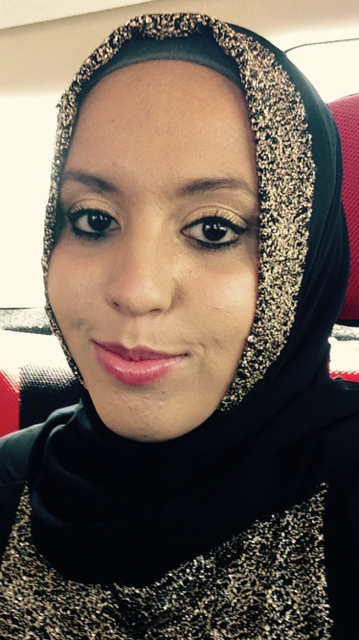

About Me
 My name is Fatimah Baaghil. I am a fast learner and hardworking individual. I have always been in awe of the craft of movie-making. The work and time involved in creating a finished product is intense. The entire movie-making process, from the original idea and concept to the final editing process, is a beautiful form of art. I have watched many behind-the-scenes making of films, enthralled with the process in which every single person plays a key role in the making of a film. Oftentimes, I have enjoyed a movie much more after watching the amount of work that has been put into a film. I have always dreamed of working at Disney. Watching Disney’s attention to detail for each of their films and shorts demonstrates a passion I have always wanted to share and be a part of. I have written, directed, filmed, and edited a documentary, a short film, and school projects using Final Cut Pro and Adobe Premiere Pro programs. I would also love to be a part of start-up companies in need of a director or filmmaker.
Contact me through email:
fbaaghil2@horizon.csueastbay.edu